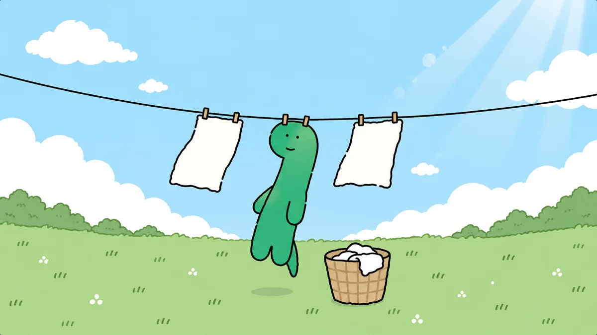

개인 블로그 · 개발과 보안의 기록
호기심을
기록으로.
안녕하세요, dnrgus입니다. 개발, 보안 실습, 연구 자료를 읽으며 알게 된 것을 제 언어로 정리합니다. 빠른 결론보다 재현 가능한 과정과 분명한 근거를 남기고 싶습니다.
FIELD NOTE / 001
느리더라도
꾸준하게!
꾸준하게!
Brachio's note↗
01 / ABOUT
배운 것을 쌓아두는
작은 연구실
이곳은 개발 과정에서 마주친 문제, 허가된 환경에서의 보안 학습, 읽은 자료와 도전의 과정을 남기는 공간입니다. 확인한 사실과 제 해석을 구분하고, 시간이 지나도 다시 따라갈 수 있는 글을 지향합니다.
CTF와 Bug Bounty 내용은 대회·워게임 또는 명시적으로 승인된 범위의 활동을 전제로 합니다. 타인의 시스템을 허가 없이 시험하거나 민감한 정보를 공개하지 않습니다.
첫 글: GitHub Pages 알아보기
02 / EXPLORE
여섯 갈래의 호기심
관심사를 주제별로 모았습니다.
카드를 눌러 첫 기록을 읽어보세요.
01 / 06↗개발저장소의 파일이 웹사이트가 되는 과정을 이해하고, 첫 페이지를 배포하는 순서를 정리했습니다.글 읽기 02 / 06↗CTF/Wargame정답만 적기보다 문제 조건, 관찰, 시도, 검증을 남기는 풀이 노트의 기본 형식입니다.글 읽기 03 / 06↗Bug Bounty승인된 대상에서만 테스트하고, 발견부터 제보까지 필요한 증거를 차분히 정리합니다.글 읽기 04 / 06↗블로그/기술문서독자가 문제를 이해하고 다시 시도할 수 있도록 기술 글의 흐름을 잡는 방법입니다.글 읽기 05 / 06↗논문/컨퍼런스새로운 아이디어를 내 언어로 이해하고 재검토하기 위한 독서 노트입니다.글 읽기 06 / 06↗공모전/자격증공모전과 자격증 공부를 다음 시도에 도움이 되는 실천 기록으로 바꾸는 방법입니다.글 읽기
03 / WRITING
최근 기록
각 주제의 시작 글을 한곳에서 살펴볼 수 있습니다.
KEEP EXPLORING오늘의 질문이
GitHub에서 보기